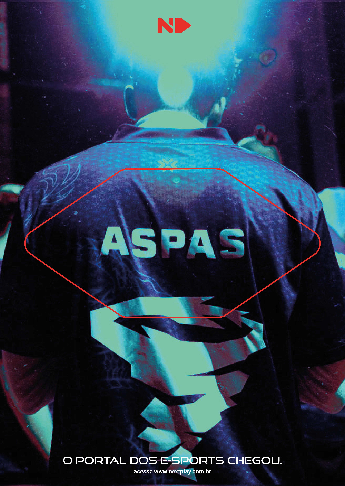
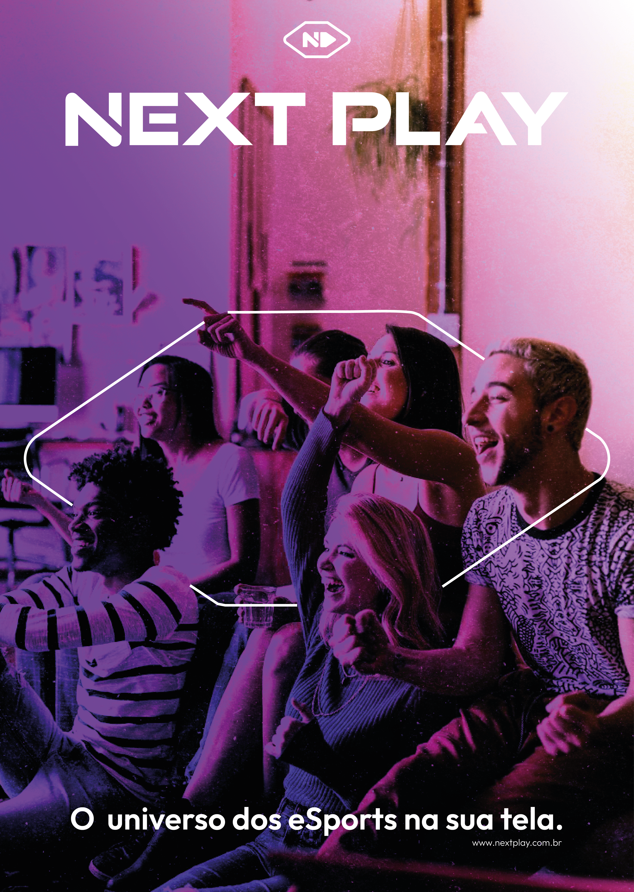

<next play>
brazil's first esports broadcasting portal — built to own an entire vertical. the stretched hexagon frames content, tiles as texture, signals outward. red for the primary mark, violet for the analyst desk, lime for championship nights.
( ... )



